| Osnove prostorske grafike (Voxel graphics)
Avtor: Ozzy
Objavljeno: 08.10.2003, ob 18:55:48.
Uvod
V svetu postaja predstavitev 3D objektov z mnogokotniškimi modeli iz dneva v dan bolj popularna. Tega modela se drži tudi večina modernih iger, ki kot osnovo uporabljajo 3D grafiko. Kljub temu, da je mnogo manj poznan pa poleg mnogokotniškega modela obstaja še en pristop k prikazovanju 3D objektov. To je vokselski model (voxel model), ki ga lahko poimenujemo tudi "prostorska grafika" (volume graphics, volumetric graphics). Prostorska grafika je danes popularna predvsem v medicinskih aplikacijah, kjer se ponavadi na računalniku izvaja rekonstrukcija pravih modelov. Prostorska grafika ima svoje prednosti in slabosti pred predstavitvijo z mnogokotniki. Kot najpomembnejšo prednost lahko navedemo predvsem možnost ogleda notranjosti objektov. Medtem ko mnogokotniški model opiše samo lupino oz. površje objekta, recimo glave (slika 1a), si lahko pri predstavitvi objekta z vokselskim modelom ogledamo tudi notranjost tega objekta. Na primeru glave (slika 1b) tako lahko vidimo strukturo možganov, lobanjo, itd. Kot najvecjo slabost vokselskega modela pa lahko navedemo predvsem velike zahteve po pomnilniku ter "kockastost" vokselskih modelov (Slika 2), ki pa pri dovolj veliki resoluciji izgine.
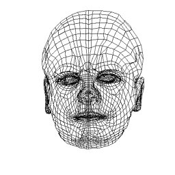
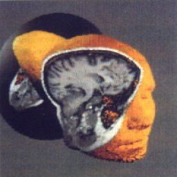
(a) (b)
Slika 1: Predstavitev glave z modelom iz mnogokotnikov (a), predstavitev glave s prostorskim modelom - voksli (b).
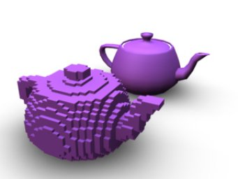
Slika 2: Primerjava mnogokotniškega (v ozadju) in vokselskega (spredaj) modela čajnika.
Osnove
Za začetek povejmo nekaj o osnovah prostorske grafike. Prva stvar, ki jo moramo narediti če zelimo imeti prostorski model objekta je, da si naš 3D prostor razdelimo na majhne celice (slika 3). Tem celicam pravimo voksli. Besedica voksel (voxel) je nastala kot okrajšava za besedno zvezo volume element. Voksel predstavlja najmanjši delec v našem namišljenem 3D prostoru, podobno kot piksel (pixel - picture element) predstavlja najmanjši delec v 2D prostoru (sliki).
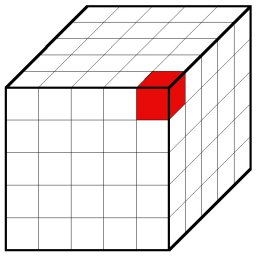
Slika 3: Delitev prostora. Prostor smo razdelili na mrežo 5x5x5 delcev oziroma vokslov. Z rdečo barvo je označen en voksel našega prostora.
Sedaj, ko imamo prostor razdeljen na posamezne celice oziroma voksle, lahko tem celicam določimo vrednost. Vrednost celice je lahko barva, torej kombinacija 3 ali 4 vrednosti (RGB, RGB + alfa), ali pa gostota (density), včasih pa se uporabljata tudi gostota in prosojnost (density + transparency). Vokslom, katerim ne želimo določiti vrednosti, vrednost postavimo na nič. Takšnim vokslom v žargonu rečemo tudi zrak (ker v večini primerov dejansko predstavljajo zrak oziroma praznino).
Vrednost celicam oziroma vokslom lahko določimo na različne načine:
Lahko jih določimo ročno, torej tako, da vsakemu posameznemu vokslu vpišemo vrednost.
Druga možnost je, da mnogokotniški model objekta pretvorimo v vokselski model. V tem primeru je potrebno najprej izračunati presečišča med mnogokotniki in celicami. Sedaj vsem celicam, ki jih mnogokotniki sekajo priredimo neko vrednost (ta je lahko npr. enaka barvi mnogokotnika). Na koncu pa moramo določiti še vse tiste voksle, ki ležijo v notranjosti objekta, ter tudi njim določiti vrednost.
Tretja možnost pa je, da dobimo že ustvarjen vokselski model, ki ga lahko pridobimo z raznimi napravami. Ta možnost je tudi najpogostejša. Kot primer navedimo CT slike človeške glave. Pri tem postopku naprava vrne zaporedje 2D slik, ki jim pravimo tudi rezine (slices), človeške glave (slika 4) na različnih koordinatah. Iz teh slik lahko nato generiramo model glave na računalniku (slika 5).
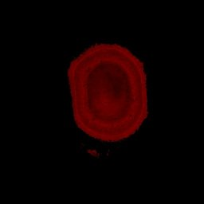 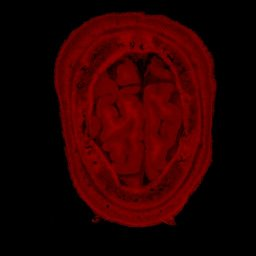
(a) (b)
Slika 4: Rezine, pridobljene s CT skeniranjem:
Deseta rezina (a), trideseta rezina (b).
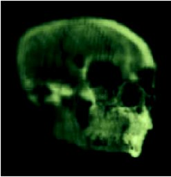
Slika 5: Vizualizacija vokselskega modela lobanje.
Ko imamo prostroski model ustvarjen se lahko lotimo prikazovanja oziroma vizualizacije. To lahko storimo na vec načinov. Nekaj postopkov vizualizacije bomo spoznali v naslednjem delu.
Prikazovanje
Podobno, kot je potrebno pri mnogokotniški grafiki 3D sceno prenesti na zaslon, moramo tudi pri prostorski grafiki uporabiti način s katerim podatke iz 3D modela pretvorimo v obliko primerno za prikazovanje na ekranu. Za prikazovanje prostorskih podatokov (volume visualization, volume data visualization, volume rendering) se uporabljajo trije različni pristopi:
Projiciranje vokslov (splatting, voxel projection). Projiciranje vokslov je najpreprostejša metoda prikazovanja, ki pa ob osnovni implementaciji daje tudi najslabše rezultate. Vsak voksel posamezno projiciramo na projekcijsko ravnino. Projekcija voksla na ravnini je ponavadi šestkotnik, v nekaterih primerih pa tudi štirikotnik. Ker imajo pri uporabi paralelne projekcije vsi voksli enako projekcijo si lahko najprej izračunamo projekcijo za en voksel. Tej projekciji recčmo odtis voksla (voxel footprint). Ta odtis lahko nato uporabimo za hitrejše projiciranje drugih vokslov.
Metanje žarkov (ray casting). Osnovna ideja algortima metanja žarkov je, da iz vsake točke (piksla) na ekranu usmerimo žarek proti našemu prostoru vokslov. Ta žarek nato vzorčimo na različnih mestih (recimo na 50 mestih). Za vsako točko vzorčenja določimo v kateri voksel pade, ter ji nato priredimo vrednost tega voksla. Pikslu, nato določimo vrednost tako, da na žarku poišcemo prvo vzorčno točko, katere vrednost ni nič. Torej poišcemo prvo vzorčno točko s katero nismo zadeli zraka.
Shear - warp factorization. Ta metoda je najhitrejša metoda za prikazovanje vokslov, če uporabimo zgolj programske zmogljivosti. Osnova te metode je trik pri katerem si spremenimo naš prostor vokslov v zaporedje nekoliko zamaknjenih ravnin. S tem znatno pridobimo na hitrosti, saj se izognemo počasnemu preračunavanju vrtenj (rotacij).
Ogledali smo si zgolj tri osnovne načine s katerimi lahko izvedemo prikaz prostorske grafike. S posebnimi triki se da te tehnike še pohitriti, prav tako pa lahko z različnimi načini vizualizacije dosežemo tudi posebne učinke, kot so prikaz določenih podrobnosti, prikaz maksimalne vrednosti, simulacija rentgenskega pogleda, itd.
Pristopi, ki smo jih navedli uporabljajo zgolj programske zmogljivosti, zadnje čase pa se vse bolj pojavljajo tudi algoritmi, ki za pospeševanje prikaza prostorske grafike izkoriščajo tudi strojno opremo. Trend se je pojavil predvsem z najnovejšimi grafičnimi karticami, ki že omogočajo preprosto in hitro delo s 3D teksturami, s katerimi lahko simuliramo vokselski model.
Prednosti in slabosti
Sedaj, ko imamo že jasno idejo o tem kaj je to prostorska grafika, si poglejmo še nekaj prednosti in slabosti.
Prednosti:
Možnost ogleda notranjosti objektov. Medtem, ko lahko pri uporabi mnogokotnikov prikažemo zgolj zunanjost oziroma lupino, lahko z uporabo prostorske grafike predstavimo tudi notranjost objekta.
Neodvisnost hitrosti prikazovanja od modela. Pri mnogokotnikih je lahko hitrost izrisovanja scene velikokrat odvisna od kompleksnosti modela, torej se lahko spreminja glede na to koliko mnogokotnikov je v določenem trenutku potrebno prikazati. Pri prostorski grafiki pa je hitrost prikazovanja odvisna le od resolucije vokselskega prostora (če uporabimo kot način vizualizacije projiciranje vokslov) oziroma resolucije ekrana (če uporabimo kot nacin vizualizacije metanje žarkov). Ta elementa pa se med prikazovanjem ponavadi ne spreminjata.
Hitro računanje deformacij. Za razlago vzamimo primer, da želimo prikazati trk železne krogle s steno. Če uporabljamo mnogoktniško grafiko je potrebno ustvariti nove mnogokotnike, ki bodo predstavili luknjo na steni, za kar so potrebne kompleksne računske operacije. Pri prostorski grafiki pa samo preverimo katere voksle zadene krogla. Za te voksle rečemo, da so se odkrušili in jih preprosto odstranimo iz modela.
Lažje modeliranje naravnih pojavov. Modeliranje naravnih pojavov, predvsem takih, ki so že sami v osnovi sestavljeni iz majhnih delcev, kot npr. voda oziroma valovanje, megla, pešceni viharji v vetru itd., je preprostejše z uporabo prostorske grafike prav zaradi osnovnih lastnosti teh pojavov, ki jih lažje predstavimo z delci (npr. vodo predstavimo kot skupek vodnih kapljic).
Slabosti:
Velike potrebe po pomnilniku. Kot lahko razberemo že is zasnove prostorske grafike, si najprej razdelimo prostor na majhne delce, nato pa moramo vsakemu od teh delcev prirediti določeno vrednost. Ker si prostor razdelimo na n x n x n delcev, velikost modela raste zelo hitro, ko višamo resolucijo. V Tabeli 1 lahko vidimo potrebno količino pomnilnika za predstavitev vokselskega modela v odvisnosti od željene resolucije tega modela ter števila bajtov, ki jih uporabimo za predstavitev vrednosti posameznega voksla.
Počasno prikazovanje. Kljub temu, da smo našteli kar tri načine prikazovanja prostorske grafike pa do dandanes noben ni bil primeren za prikazovanje prostorske grafike v realnem času. Šele v zadnjem času so se pojavili algoritmi in aplikacije, ki ob uporabi hardverskih zmogljivosti, omogočajo prikaz prostorske grafike v realnem času.
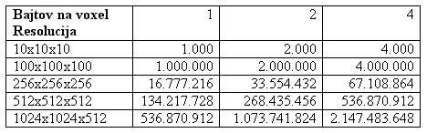
Tabela 1: Potrebna količina pomnilnika (v bajtih) v odvisnosti od velikosti vokselskega modela
Uporaba prostorske grafike
Oglejmo si, kje se danes prostorska grafika uporablja. Kot smo že omenili se najpogosteje uporablja v medicinske namene. Ob tem pa se pojavlja tudi v drugih znanstvenih aplikacijh, npr. v strojništvu (slika 6a). Eno pomembnješih podrocij je še računanje pretoka tekočin (Computational fluid dynamics - CFD), ki se uporablja tudi za računanje aerodinamike objektov (slika 6b). Poleg tega se vokselska grafika dostikrat uporablja tudi v aplikacijah, ki omogočajo računanje in prikazovanje zemeljskega površja (Slika 6c).
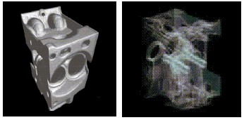
(a)
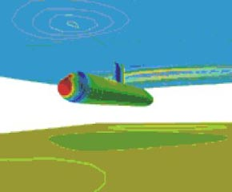 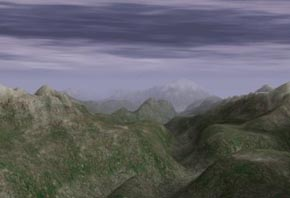
(b) (c)
Slika 6: Uporaba prostoske grafike v znanosti: dve različni vizualizaciji vokselskega modela bloka motorja (a), računanje aerodinamičnih lastnosti podmornice (b), prikaz modela terena (c).
Kljub svojim slabostim in predvsem mnogo večji popularnosti mnogkotniške grafike, pa je prostorska grafika našla svoje mesto tudi v igrah. Tukaj se uporablja predvsem za modeliranje površja ter modeliranje spremenljivih pojavov, npr. vode. Za najbolj znano igro, ki uporablja prostorsko grafiko, je dolgo veljala simulacija helikopterja Comanche (slika 7a), v kateri je bilo celotno površje prikazano z voksli. V zadnjem času pa je igra, ki slovi po uporabi prostorske grafike pustolovšcina Outcast (slika 7b). Tudi ta uporablja vokselski model za model zemeljskega površja. Uporablja pa ga tudi za simulacijo vodnih površin. Zaradi tega, voda v Outcast-u tudi slovi kot ena najlepših sploh.
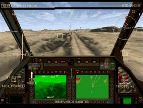 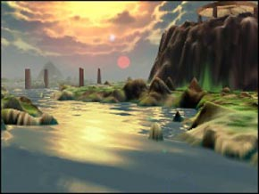
(a) (b)
Slika 7: Uporaba prostorske grafike v igrah: Comanche (a), Outcast (b).
Zaključek
Tako, prišli smo do konca članka. Povedali smo nekaj o osnovah prostorske grafike, o njenih prednostih in slabostih, ter tudi o tem kaj potrebujemo za prikazovanje prostorske grafike na računalniku. Upam, da ste večino stvari razumeli, če pa vam karkoli ni jasno kar napadite avtorja članka na Slogamedev-ovem forumu.
Če bo dovolj interesa in če bo avtor našel čas, bomo poskusili v prihodnjih člankih zgraditi tudi lasten motor za prikazovanje vokselskih modelov.
|